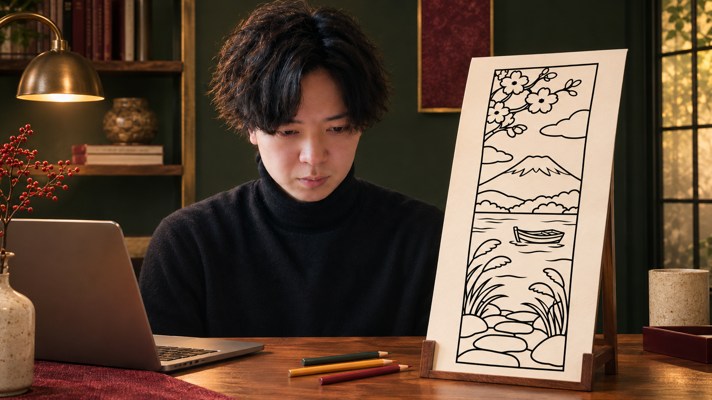
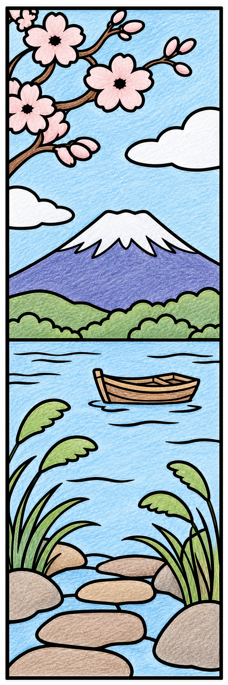
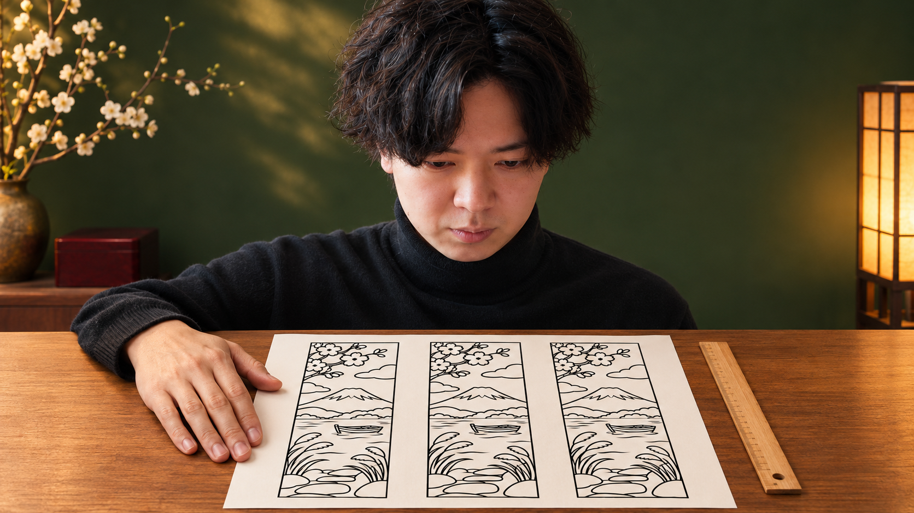

いそっち式 AI塗り絵しおり販売スタートブック

解説動画
動画を受け取り次第、掲載します。
絵も英語も、ここで止めない
- 売る絵を、自分では描けない。
- 英語の商品説明で手が止まる。
- 何をデータで渡せばいいか迷う。
線画と英語はチャッピーに。
海外向けの出品準備へ進みます。

売るものを決める。
僕がおすすめするのは、日本らしい塗り絵しおり。日本好きの海外の人に向けて、今回は富士山・湖・小舟に絞ります。
このしおりを作ります
 渡すのは線画
渡すのは線画
塗った見本練習見本。販売用は自分のテーマで制作。
線画を作る
ChatGPTの新規チャットへ、下の指示を送信。完成画像は保存します。
画像を作る指示文
ChatGPTで画像を作成してください。 【テーマ】富士山・湖・小舟が見える日本の風景 【買い手と用途】日本の風景が好きな海外の人向け。印刷して色を塗る、縦長のしおり。 【構図】縦横比1:3のしおり1本。遠景に雪のある富士山、中景に湖と小さな木の舟、手前に石の道と植物。現実の風景として奥行きが通る配置。 【線】白地に黒い輪郭線。塗れる広い面を残す。灰色の陰影、細かすぎる線、文字、ロゴ、透かしは入れない。 【余白】絵が切れないよう、細い外枠と均等な白い余白を付ける。 出力は画像ファイル。既存の作家や販売商品の絵柄はコピーしないでください。
線が細かい・汚れがあるとき
印刷サイズでも塗れる面が残っているか、外枠と線の切れを見ます。この作例は花びらの灰色を直しました。
この画像の構図と黒い輪郭線は保ち、灰色の汚れや陰影を白に直してください。富士山、舟、花、石、外枠を描き変えず、文字・色・新しい物を追加しないでください。塗る面が細かすぎる場合は、その箇所を先に指摘してください。
PDFと英語を作る
印刷は「実際のサイズ・100%」。
PDF・英語を作る指示文
添付した自分の塗り絵しおり画像1点だけを使い、Etsy出品用の準備をしてください。 画像は描き直さず、縦横比を維持してください。 1. 印刷用PDF ・A4縦1ページ（210×297mm）。同じしおりを3本、横に配置。 ・切り取り後の仕上がり寸法は1本50×150mm。外周に余白と切り取り線。 ・英語の印刷説明を付ける。Actual size / 100%、Fit to pageをオフと明記。 ・fuji-bookmarks-a4.pdfとして、実際にダウンロードできるファイルを作る。 2. 英語の出品原稿 ・商品名140文字以内、説明文、タグ13個以内（各20文字以内）。 ・1デザインを3本並べたデジタルPDF、A4のみ、各50×150mm、実物発送なし、個人利用向けと明記。 ・AIを使用した自分のデザインであることを説明に含める。 ・画像にない特徴、販売実績、価格、レビュー、実際のテスト印刷は作らない。 ・etsy-listing-en.txtに保存する。 3. 確認 ・PDFを表示し、ページ寸法・切り取り線の寸法・3本の配置・絵の切れを確認。 ・原稿の点数、寸法、ファイル名がPDFと一致するか確認。 公開、出品、購入、外部送信、予約設定、アカウント接続はしないでください。 作れないファイルや確認できない項目があれば、具体的に報告してください。
英語原稿と実画面を見る
商品名・説明文・タグは、この同じPDFを説明する内容です。点数と寸法を照合して使います。
TITLE Mount Fuji Coloring Bookmarks Printable PDF, Japanese Lake and Boat Line Art, 3 Bookmarks on A4, 50 x 150 mm DESCRIPTION Enjoy a quiet Japanese landscape featuring Mount Fuji, a lake, a small boat and cherry blossoms in black-and-white line art for coloring. WHAT YOU RECEIVE - One digital PDF file: fuji-bookmarks-a4.pdf - One A4 portrait page (210 x 297 mm) only; no US Letter version - One design repeated three times, not three different designs - Three finished bookmarks, each 50 x 150 mm - Dashed cutting lines, margins and short English printing instructions This is a digital PDF product. No physical item will be shipped. HOW TO PRINT Print on A4 paper in portrait orientation. Choose Actual size / 100% and disable Fit to page or other scaling. Cut along the dashed rectangles, then color as desired. Printer and paper settings may affect the result. This file has not been physically test-printed. ABOUT THE ARTWORK This original example design was created using AI. The supplied line art is used without redrawing, with its aspect ratio preserved. PERSONAL USE For personal use only. Do not resell, redistribute, share the digital file or use it commercially. TAGS (13) fuji bookmark, coloring bookmark, printable bookmark, japan coloring, mount fuji art, lake and boat, sakura coloring, a4 printable, digital pdf, personal use, bookmark template, japanese landscape, color your bookmark

Etsyの出品へ渡す
出店済みの方は、Shop Manager → Listings → Add a listingへ。種類はDigital filesを選択。
出品の入力・費用・AI使用の条件
- 自分の出店アカウントで入力します。未出店の方は、公式の開店手順と費用を先に確認。
- 作品に最も近いカテゴリを選び、商品の種類をDigital filesにします。制作時期・制作者等は実際の内容に合わせます。
- 商品画像、英語の商品名・説明文・タグ、ダウンロード用PDFを入れます。AI使用を説明文に記載。自分の独自の入力・デザインであることも確認します。
- 価格と通貨は自分で決めます。出品料は1件0.20米ドル、販売時の取引手数料は6.5%。決済・地域・広告等の費用や開店費用も確認し、手取りを見て判断します。
- PDFを開き、点数・寸法・画像と英語の一致を確認。「Save as Draft」で保存し、読み直してから公開を判断します。公開すると費用が発生するため、練習のまま押さないでください。
デジタルファイルは最大5点、各20MBまで。配布キット全体ではなく、購入者へ渡すPDFを登録します。
慣れたら、まとめて任せる

完成条件まで渡す。
僕は寝る前に「朝までにやっといて」とまとめて頼んでいます。何を作るかを先に決めて、朝は中身を確認する流れです。
まず1回、まとめて任せる指示文
添付した採用済みの塗り絵画像を使って、この会話内で出品準備をまとめて進めてください。 これは今すぐ1回だけの依頼です。予約や毎晩の実行設定は作らないでください。 【成果物】A4縦1ページのPDF（同じ絵3本、各50×150mm、切り取り線、Actual size / 100%の印刷説明）、英語の商品名・説明文・タグ、点数と寸法の確認結果。 【制約】画像は描き直さない。販売実績を作らない。AI使用を説明に含める。公開・購入・送信・出品はしない。 【完了】PDFとTXTをダウンロードできるファイルで返し、未確認の点を列挙。 完了後は止まり、僕が中身を確認できる状態にしてください。
毎晩動かす設定をするには
まず上の指示を手動で1回試します。ChatGPT Workではファイルを使う複数の作業を頼めますが、利用できる機能と利用枠はアカウント等で異なります。
- 手動実行で画像・PDF・原稿がそろうか確認。
- Scheduled／タスクを開き、対応していれば実行時刻・タイムゾーン・繰り返し・保存する指示を設定。
- 添付画像へアクセスできることと、必要な生成・ファイル作成機能が使えることを確認。
- タスクの確認画面に「毎日23:00」「Asia/Tokyo」等の意図した条件が表示されてから開始。最初の実行結果を読み、不要になったら停止します。
「朝までに」と通常の会話へ送るだけで、毎晩の予約になるわけではありません。自動の公開・出品は含めず、人の確認で止めます。
手動で試したこの作業を、毎晩23:00（日本時間）に繰り返すタスクとして設定したいです。 保存する指示・使う添付画像・作成するPDFと英語原稿・公開せず止まる条件・利用可能な機能と利用枠を、設定前に確認させてください。 テーマは【自分で記入】。自分のオリジナルの入力で制作し、前回と同じファイルを再提出しないでください。 公開、出品、購入、送信、追加の有料契約は行わない。完成ファイルと未確認点を返し、人の確認で止まる。 元画像や生成・ファイル作成機能を利用できない場合は、予約を作らず理由を教えてください。
まずは1枚、作ってみる
- 線画・PDF・英語が同じ作品。
- 1デザイン、3本、50×150mm。
- 試し刷りして、切って塗れる。
【テーマ】を変えて送ってみてください。PDFができたら、実寸で印刷して確かめます。
一式を保存する（ZIP）ページ・見本・指示文・英語原稿入り。展開後のindex.htmlをブラウザで開きます。
保存ガイドを読む次は、売り方と自動化へ
しおりの売り方や、準備の自動化も知りたい方へ。AI画像の販売・作業の自動化・AI収益化のノウハウは、僕の公式LINEで無料で受け取れます。
 いそっちの公式LINEへ
いそっちの公式LINEへ